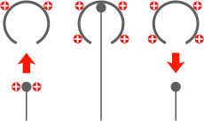
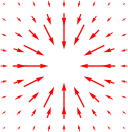
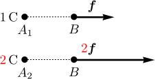
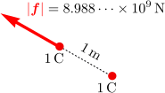
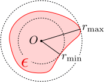
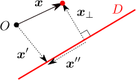
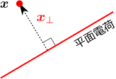
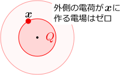

クーロン力が知りたい
力には、力学編で出てきた重力や拘束力以外に、電磁気的な力も存在する。例えば、服で擦った下敷きは静電気を帯び、紙片を吸い付ける。この時に働いている力をクーロン力という（第3章で見るように、静電気を帯びた物体に働く力として、もう1つローレンツ力と呼ばれるものがある）。
求めたいのは、クーロン力
𝒇
を受ける物体の運動
𝒙(𝑡)
である。力学編の第2章で述べた様に、
𝒙(𝑡)
は運動方程式
𝑚¨𝒙=𝒇
を解くことによって得られるのだから、
𝒇
を求めさえすればよい。物体が受けるクーロン力は、その物体の場所
𝒙
に依存するので、
𝒇
は、
𝒙
の関数となるはずである：
𝒇(𝒙)
（例えば上記の下敷きと紙片の場合、下敷きに近づくにつれて紙片は大きな力を受ける）。
実際にクーロン力を測定するにあたって、下敷きと紙片では扱いづらいので、静電気を溜める方法を考えることから始めるのがよいだろう。その後、最も単純と考えられる、大きさが無視できる物体間に働くクーロン力を与え、大きさが無視できない場合の議論につなげるのがよいだろう。そこでこの章では、以下の4節に分けて議論を行う：
1.1:電荷を溜める1.2:点電荷から受けるクーロン力1.3:密度分布のある電荷から受けるクーロン力1.4:例題：クーロン力の計算
電荷とは、溜まった静電気の量のことである。ただし、点電荷のように、電荷を持った物体（の形状）そのものを表すこともある。1.4節では、単純な形状の電荷密度分布（直線、平面、球対称）の場合の具体的な計算を行う。
1.1電荷を溜める：ヴァンデグラフ起電機
典型的なクーロン力は、上述のように服で擦った下敷きなのだが、それでは理論的に扱いづらいので、まず、静電気を溜める方法の1つであるヴァンデグラフ起電機について述べる。
1.1.1電荷には正と負がある
静電気を帯びることを「帯電する」といい、その静電気の量を電荷という（どのように電荷を定量化するかは1.2節で述べる）。電荷には2種類あり、同種の電荷を持つ物体同士は反発しあい、逆に、異種であれば引き合うことが知られている。これら2種類の電荷に便宜的に符号をつけて、正の電荷、負の電荷と呼んで区別する。符号の取り方は、毛皮と塩化ビニールを擦り合わせたときに、毛皮が帯びる電荷が正、塩化ビニールが負となる。毛皮同士や塩化ビニール同士は、同符号なので反発し合い、逆に、毛皮と塩化ビニールは引き合う。
歴史的には、琥珀と毛皮を擦り合わせた時、琥珀が持っていた正の電気を毛皮に与えると考えられたため、琥珀が負で毛皮が正に帯電するように定義された。（電気の英語名electricityの由来は、琥珀を表すギリシャ語イレクトロンである。）しかし、実際には、琥珀は電気を与える側ではなく、電子と呼ばれる電荷を受け取る側であることが後に明らかになった。そのため、電子の電荷は負となった。
1.1.2ファラデーのアイスペール実験

電荷を蓄える手段が欲しいのだが、そのために着目するのは、ファラデーのアイスペール実験（Faraday's ice pail experiment）と呼ばれる実験である。この実験によると、右図のように、金属球の内部に帯電した物体を触れさせると、その電荷が金属球に奪われることが知られている（全体が覆われていれば球形でなくてもよい）。なお、アイスペールとは、氷を入れて保つための（金属製の）卓上容器である。
特にこの性質は、金属球側が帯電しているかどうかとは無関係である。金属球が帯電してくるにつれて、それ以上電荷を受け取らなくなりそうな気がするが、そうではないのである（もちろん限界はあるが）。
1.1.3ヴァンデグラフ起電機
従って、帯電した物体をたくさん用意しておくなどし、それらの電荷を次々に金属球に移していけば、大量の電荷を金属球に蓄えることができる。このような装置を、ヴァンデグラフ起電機という。
1.2点電荷から受けるクーロン力
この節では、2つの点電荷（＝大きさが無視できる帯電した物体）の間に働くクーロン力の公式であるクーロンの法則(2)について述べる。前節のヴァンデグラフ起電機の要領で、様々な量の電荷を点電荷を用意し、様々な場所でクーロン力を測定すれば、実験的に導出できる。
1.2.1点電荷同士に働く力は、逆2乗則に従う：式(1)
まず、帯電させた小さな物体
𝐴
を用意し、静止させる。そして、その近くに別の帯電させた小さな物体
𝐵
を様々な位置においてみて、
𝐵
がどのような力を受けるかを観測する。
𝐴,𝐵
を区別するため、
𝐴
をソース電荷（一般的ではない）、観測用の物体
𝐵
を試験電荷と呼ぶ。これにより、どのような位置関係の時にどのような力が働くのかが分かる。

そのような実験を行った結果、以下のことが知られている。即ち、原点にソース点電荷
𝐴
を置いた時、位置
𝒙
にある試験電荷
𝐵
が受ける力
𝒇(𝒙)
は、以下のような逆2乗則に従う：
𝒇(𝒙)=𝛼̂𝒙|𝒙|2(1)
𝒇(𝒙)
をベクトル場（力学編の2.3節）で表すと、金属球の中心から放射状の向きを持ち、大きさ
|𝒇|
は中心からの距離の2乗に反比例する（右図は
𝛼
が負の場合）。
𝛼
は、
𝐴,𝐵
の電荷に依存する係数である。また、
𝛼
の符号は、
𝐴,𝐵
が同符号の電荷を持っていれば「+」（斥力）、異符号であれば「-」（引力）となる。
1.2.2電荷の定量化
式(1)の比例係数を決めたいのだが、これは点電荷がどれだけ帯電しているかに依存するはずなので、電荷の定量化と合わせて行う必要がある。

電荷の定量化は、クーロン力に比例するように行えばよいだろう（質量の定量化が重力に比例するようにできたのと同じことを期待している）。まず、基準となる適当な点電荷
𝐴1
を用意して、その電荷を1クーロン（
1C
）と定義する。これを用いて未知の点電荷
𝐴2
の電荷を定量するには、試験電荷
𝐵
を用意して、
𝐴1
と
𝐴2
の周りでのクーロン力を測定すればよい。例えば、
𝐵
を
1m
まで近づけた時に、
𝐴2
から
𝐵
が受ける力が
𝐴1
の場合の
2
倍になるならば、
𝐴2
の電荷は、それに比例した
2C
ということになる。

基準となる
1C
の電荷をどうとるかには任意性があるが、次のようにとることになっている。即ち、同じ大きさの電荷を持つ2つの点電荷を
1m
だけ離して置いた時に、両者の間に働くクーロン力の大きさが
8.988⋯×109N
である時、これらの電荷の大きさを
1C
と定義する。
1C
というのは非常に大きな電荷であり、
1kg
の物体が地上で受ける重力
9.8N
と比べても、桁違いに大きなクーロン力を受けることが分かる。定義の数値が中途半端な上に非常に大きな値になっているのは、本来クーロンの定義は、次章で扱う電流を用いてなされるためである。次章でもう一度言及する。
1.2.3クーロンの法則：式(2)
以上の定量化のもとで、原点に
𝑞0[𝐶]
の点電荷を置いた時に、点
𝒙
に置かれた電荷
𝑞[𝐶]
をもつ点電荷が受けるクーロン力
𝒇
は、以下のようになる：
𝒇=𝑘e𝑞𝑞0̂𝒙|𝒙|2𝑘e≡8.988⋯×109N⋅m2⋅C−2(2)
これをクーロンの法則といい、係数
𝑘e
をクーロン定数という。式(2)に現れる
𝑞,𝑞0
の積のおかげで、電荷の符号が等しい場合には斥力（反発力）、異なる場合には引力となっており、前節の性質と整合している。なお、式(2)の
𝑘e
は真空中でのものである。空気中や水中などでは多少異なる値を取る。
式(2)において、
𝒇
が、原点の電荷
𝑞0
に比例するのは電荷の定量化によるものだが、自分自身の電荷
𝑞
にも比例するのは、作用・反作用の法則の帰結である。実際、原点に置かれた電荷から見れば、その電荷が受ける力
𝒇0
は、
𝒙
にある電荷
𝑞
に比例することになるが、作用・反作用の法則により
𝒇0=−𝒇
となるため、
𝒇
自身も
𝑞
に比例しなければならない。クーロン力のような非接触力にも作用・反作用の法則が成り立つことは、実験的に確認すべきではあるが、例えば棒の両端に
𝑞,𝑞0
を取り付けた時、棒が勝手に加速しないためには、棒全体にかかる力
𝒇+𝒇0
が
𝟎
となるはずなので、直感的にも自然である。
数値計算を行うと、式(2)のクーロン力を受ける物体の運動は、右図のようになる。
1.3密度分布のある電荷から受けるクーロン力
この節では、密度分布
𝜌(𝒙)
を持ったソース電荷が試験電荷に与えるクーロン力を考える。密度分布を持っていても、多数の微小体積要素に分割して点電荷の集合とみなせば、前節で扱った点電荷の結果が使える。
1.3.1複数の点電荷から受けるクーロン力：式(4)
式(2)はソース点電荷
𝑞0
を原点に置いた場合のものであったが、任意の位置
𝒙0
に置いた場合には、単純に変更移動した以下の形になる：
𝒇(𝒙)=𝑘e𝑞𝑞0̂𝒙−𝒙0|𝒙−𝒙0|2(3)
複数のソース点電荷があり、位置と電荷がそれぞれ
𝒙1,𝒙2,…
および
𝑞1,𝑞2,…
であるとする。各々の点電荷からのクーロン力
𝒇1,𝒇2,…
を足し合わせたものが、試験電荷が受けるクーロン力
𝒇
になることが実験的に知られている：
𝒇(𝒙)=𝒇1+𝒇2+⋯=∑𝑖𝑘e𝑞𝑞𝑖̂𝒙−𝒙𝑖|𝒙−𝒙𝑖|2(4)
クーロン力についても、力の加法性が成り立つわけである。これを重ね合わせの原理という。
なお、クーロン力の加法性は、上記の電荷の定量化とも相性がよい。例えば、電荷が
𝑞1,𝑞2
である2つの点電荷を合体させると、クーロン力の加法性により、電荷
𝑞1+𝑞2
の点電荷のように振る舞う。つまり、電荷自体も加法性を持つようになっているのである。これはちょうど、力学の第2章で質量を定量化する際、加法性を持たせることができたのと同じである。
1.3.2電場 𝑬(𝒙) の導入：式(7)
式(4)から分かるように、試験電荷が受けるクーロン力は、自身の電荷
𝑞
に比例することになる。そのため、この
𝑞
を括り出してしまって、試験電荷を除いたソース電荷部分に関する量だけにするのがよい。これを電場と言い
𝑬
と書く。
例えば、ソース点電荷が1つだけの場合、式(3)から
𝑞
を除いたものなので、以下のようになる：
𝑬(𝒙)=𝑘e𝑞𝐴̂𝒙|𝒙|2(5)
複数の点電荷がある式(4)の場合は
𝑬(𝒙)=∑𝑖𝑬𝑖(𝒙)=∑𝑖𝑘e𝑞𝑖̂𝒙−𝒙𝑖|𝒙−𝒙𝑖|2(6)
である。ただし、
𝑬𝑖
は
𝑖
番目の点電荷（電荷が
𝑞𝑖
で位置が
𝒙𝑖
）が作る電場である。
点
𝒙
にある試験電荷
𝑞
が受ける力を、
𝑬(𝒙)
を用いて書くと
𝒇=𝑞𝑬(𝒙)(7)
となる。
𝑞
は試験電荷に対する量、
𝑬(𝒙)
はソース電荷に対する量、という形に分離しているわけである。
1.3.3電荷密度 𝜌(𝒙) が作る電場(8)
電荷が連続的に分布している場合には、力学の15.3節のように、電荷を持った物体を非常に小さな体積要素に分割し、各体積要素からの寄与を足し合わせることにより、区分求積によって計算することができる。要は、(6)に現れる和を積分に置き換えればよい：（
∫𝒙′[⋯]
は
∫[⋯]∣𝑑3𝒙′∣
を略記したもの）
𝑬(𝒙)=𝑘e∫𝒙′𝜌(𝒙′)̂𝒙−𝒙′|𝒙−𝒙′|2(8)
ただし、
𝜌(𝒙′)
は電荷密度と呼ばれるもので、位置
𝒙′
にある微小体積
𝛿𝑉
に対し、その電荷
𝛿𝑞
が
𝛿𝑞≐𝜌𝛿𝑉
で近似できるような量である。
なお、
𝜌
が最初に与えられていればよいが、
𝜌
は直接測定可能な量ではないので、一般には、実験によって測定可能な
𝑬(𝒙)
の値から、
𝜌
の分布を逆算することになる。式(8)を、
𝜌=[⋯]
の形にすることは実際に可能なのだが、数学的な議論が必要になるので、第4章で行う。
式(8)のような積分は、畳み込み（または畳み込み積分）と呼ばれ、重ね合わせの原理が成り立つ場合に特徴的なものである。標語的に言えば、インパルス応答（点電荷の電場(3)）が分かっていれば、任意のソース関数（今の場合電荷密度
𝜌
）に対する応答（電場
𝑬(𝒙)
）は、ソース関数とインパルス応答の畳み込みで与えられる。
ところで、式(8)の被積分関数は、
𝒙′=𝒙
において発散する（
𝜌(𝒙)≠0
の場合）。そのため、その点では区分求積は定義できないように見える。しかし直感的には、位置
𝒙
におかれた荷電粒子は、離れたところにある電荷からクーロン力を受けるのであって、自身の周辺のソース電荷から受けるクーロン力は打ち消しあって効いてこないはずである。実際、数学的にも、発散する部分からの寄与は消えることが言える（以下の【1.3-注1】）。よって結局、発散する部分をくりぬいた状態で積分を定義し、くりぬいた部分を小さくする極限を取ることで、式(8)の積分は問題なく定義できる。
【1.3-注1】広義積分
3次元領域
𝐷
上での積分
𝐼=∫𝒙∈𝐷1|𝒙|2
は、
𝐷
が原点を含む時、非積分関数が発散する点を持つため、そのままでは定義できない。そこで、原点を含む微小な領域
𝜖
でくりぬいた領域
𝐷−𝜖
を考える。この
𝐷−𝜖
上での積分において、
𝜖
を原点に向かってい縮めていく極限
𝜖→∅
によって定義する（
∅
は空集合）：
𝐼=lim𝜖→∅∫𝒙∈𝐷−𝜖1|𝒙|2
この積分は、極限の取り方によらず収束する。このように、通常の積分では定義できないが、極限をとることでうまく定義できる積分を、広義積分という。
証明

積分が定義できないのは原点付近だけなので、
𝐷
は、原点を含んでいれば何でもよい。そこで半径
1
の球を取った時に収束することを示す。右図のように、
𝜖
に完全に含まれる最大の球（中心が原点となる）の半径を
𝑟min
、逆に
𝜖
を完全に含む最小の球の半径を
𝑟max
とおくと、以下の不等式が成り立つ：
∫𝑟max<|𝒙|<11|𝒙|2≤∫𝒙∈𝐷−𝜖1|𝒙|2≤∫𝑟min<|𝒙|<11|𝒙|2(9)
両端の項は、極座標を用いれば具体的に計算できる。例えば最左辺は
∫𝑟max<|𝒙|<11|𝒙|2=∫1𝑟=𝑟max1𝑟2⋅4𝜋𝑟2=4𝜋(1−𝑟max)
となる（
4𝜋
は
𝜙,𝜃
の積分による）。これを式(9)に代入すると
4𝜋(1−𝑟max)≤∫𝒙∈𝐷−𝜖1|𝒙|2≤4𝜋(1−𝑟min)
となるので、
𝜖→∅
の極限、即ち、
𝑟min,𝑟max→0
を取れば
𝐼=4𝜋
となり、確かに収束している。
◼
上の証明を、分母の次数を変えてたどれば分かるように、積分が収束するのは、分母の次数が
3
乗より小さい場合である。
3
乗かそれより大きい場合、広義積分は発散してしまい、定義できない。
1.4例題：クーロン力の計算
この節では、電荷密度
𝜌(𝒙)
として、次の3種類の場合について、実際に電場
𝑬(𝒙)
の計算を行う：無限に伸びた直線電荷【1.4-注1】、無限に広がった平面電荷【1.4-注2】、(C)球対称な電荷分布【1.4-注3】。この電場中に置かれた、電荷
𝑞
が受けるクーロン力は
𝒇=𝑞𝑬
である。力学編第15章の積分手法を多用する。
【1.4-注1】直線電荷の周りの電場
無限に伸びた直線電荷の周りの電場
𝑬(𝒙)
は、以下のようになる：
𝑬(𝒙)=2𝑘e𝜌̂𝒙⟂|𝒙⟂|
線電荷密度は定数
𝜌[C⋅m−1]
とする。
𝒙⟂
は、直線電荷から
𝒙
へ向かう垂線である。電場の向きは直線電荷と垂直であり、大きさは導線と
𝒙
の距離
|𝒙⟂|
に反比例することが分かる。
導出

電荷が作る直線を
𝐷
とおく。
𝐷
上の1次元積分になるので、力学編の第15章のように、
𝐷
上に長さパラメータ
𝑙[m]
を入れて、
𝑙
での積分に引き戻してやればよい：
𝑬(𝒙)=𝑘e𝜌∫𝒙′∈𝐷𝒙−𝒙′|𝒙−𝒙′|3∣変数変換：𝒙″=𝒙′−𝒙+𝒙⟂=𝑘e𝜌∫𝒙″∈𝐷″𝒙⟂−𝒙″|𝒙⟂−𝒙″|3∣緑字部分を含む項は奇関数なので消える=𝑘e𝜌𝒙⟂∫𝒙″∈𝐷″1|𝒙⟂−𝒙″|3∣
∣
∣
∣𝑙での積分に引き戻し：𝒙″=𝑙𝒅ただし𝒅は𝐷と平行な単位ベクトル=𝑘e𝜌𝒙⟂∫∞𝑙=−∞1|𝒙⟂−𝑙𝒅|3=𝑘e𝜌𝒙⟂∫∞𝑙=−∞1√|𝒙⟂|2+𝑙23=𝑘e𝜌𝒙⟂2|𝒙⟂|2(10)
青字部分は以下のように求められる：
∫∞𝑙=−∞1√𝑎2+𝑙23∣
∣
∣
∣
∣
∣𝑙=𝑎tan𝑥𝑑𝑙𝑑𝑥=𝑎cos2𝑥𝑥∈[−𝜋2,𝜋2]=∫𝜋/2𝑥=−𝜋/21√𝑎2+(𝑎tan𝑥)23𝑎cos2𝑥=1𝑎2∫𝜋/2𝑥=−𝜋/2cos𝑥=2𝑎2
【1.4-注2】平面電荷の周りの電場

無限に広がった平面電荷がの周りの電場
𝑬(𝒙)
は、以下のようになる：
𝑬(𝒙)=2𝜋𝑘e𝜌̂𝒙⟂
面密度は定数
𝜌[C⋅m−2]
とする。
𝒙⟂
は、平面電荷から
𝒙
に向かう垂線である。面をまたぐと方向が変わるが、それ以外では平面電荷に垂直な定数となる。これにより、一様な電場を作ることができる。
導出
電荷が作る平面を
𝐷
とおく。
𝐷
は2次元なので2次元極座標
(𝑟,𝜃)
での積分に引き戻せばよい：
𝑬(𝒙)=𝑘e𝜌∫𝒙′∈𝐷𝒙−𝒙′|𝒙−𝒙′|3∣【1.4-注1】の式(10)と同じ=𝑘e𝜌𝒙⟂∫𝒙″∈𝐷″1|𝒙⟂−𝒙″|3∣(𝑟,𝜃)での積分に引き戻し=𝑘e𝜌𝒙⟂∫2𝜋𝜃=0∫∞𝑟=0𝑟1√|𝒙⟂|2+𝑟23=2𝜋𝑘e𝜌𝒙⟂∫∞𝑟=0𝑑𝑑𝑟−1√|𝒙⟂|2+𝑟2=2𝜋𝑘e𝜌𝒙⟂1|𝒙⟂|
【1.4-注3】球対称な電荷の周りの電場

原点の周りに球対称な電荷密度
𝜌(𝒙)
がある場合の電場
𝑬(𝒙)
は、以下のようになる：
𝑬(𝒙)=𝑘e𝑄̂𝒙|𝒙|2𝑄(𝒙)=∫|𝒙′|≤|𝒙|𝜌(𝒙′)
𝑄(𝒙)
は、半径が
|𝒙|
の球内の全電荷である。これを見ると、電荷
𝑄(𝒙)
を持つ点電荷の周りの電場と同じ関数形になっている。一方、半径が
|𝒙|
以上の部分にある電荷による寄与は打ち消しあって
𝟎
になることも分かる。この性質をニュートンの球殻定理(Newton's shell theorem)という。
導出
極座標をとって
𝜙,𝜃
の積分を行うだけである。ただし、
𝒙
方向を極座標の軸とする。以下では、
|𝒙|
を
𝑥
と書いている。
𝑬(𝒙)=𝑘e∫𝒙′𝜌(𝒙′)𝒙−𝒙′|𝒙−𝒙′|3∣𝒙方向を軸とする極座標をとる。=𝑘e∫∞𝑟=0∫𝜋𝜃=0∫2𝜋𝜙=0𝑟2sin𝜃𝜌(𝑟)𝒙−𝒙′|𝒙−𝒙′|3∣
∣
∣
∣
∣𝜙積分を実行。（青字部分は𝜙に依存しないことに注意。）（𝒙′を𝜙積分すると、𝒙と平行になることに注意。）=𝑘e∫∞𝑟=0∫𝜋𝜃=02𝜋𝑟2𝜌(𝑟)sin𝜃𝑥−𝑟cos𝜃|𝒙−𝒙′|3̂𝒙∣
∣
∣
∣
∣
∣sin𝜃𝑥−𝑟cos𝜃|𝒙−𝒙′|3=𝜕𝜕𝑥𝜕𝜕𝜃−|𝒙−𝒙′|𝑟𝑥∵|𝒙−𝒙′|=√𝑥2+𝑟2−2𝑟𝑥cos𝜃これを用いて𝜃積分を実行。=𝑘e∫∞𝑟=02𝜋𝑟2𝜌(𝑟)[𝜕𝜕𝑥−|𝒙−𝒙′|𝑟𝑥]𝜋𝜃=0̂𝒙=𝑘e∫∞𝑟=02𝜋𝑟2𝜌(𝑟)[−𝜕𝜕𝑥𝑥+𝑟−|𝑥−𝑟|𝑟𝑥]̂𝒙∣
∣
∣
∣
∣[⋯]={2𝑥2,𝑟<𝑥0,𝑥<𝑟=𝑘e∫𝑥𝑟=02⋅2𝜋𝑟2𝜌(𝑟)⏟___⏟___⏟𝑄1𝑥2̂𝒙